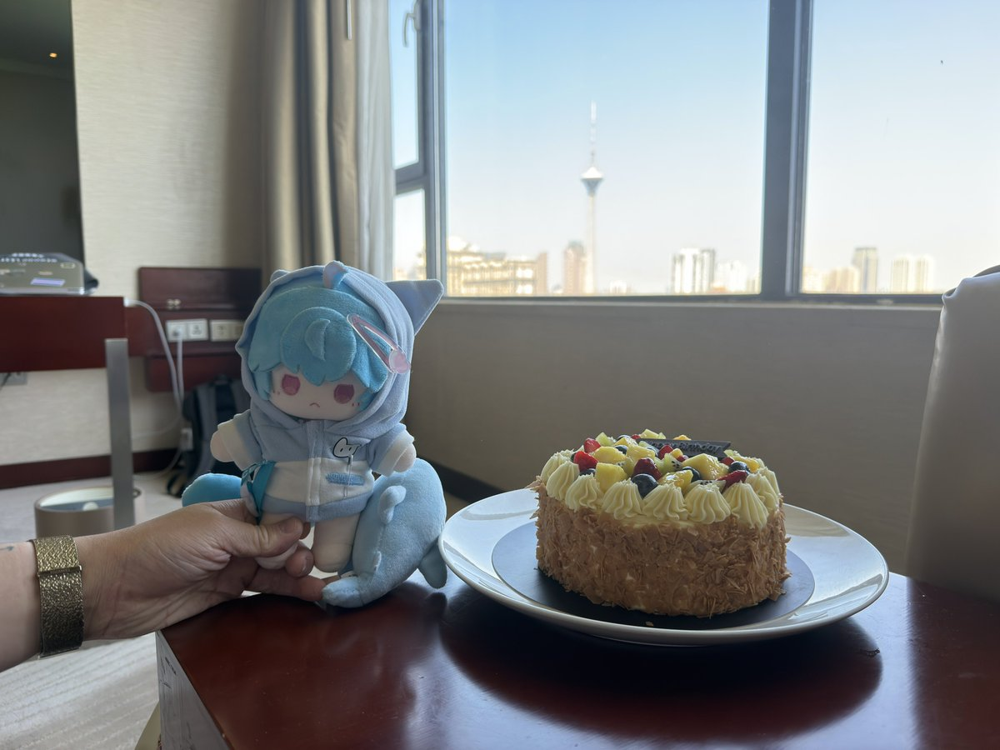
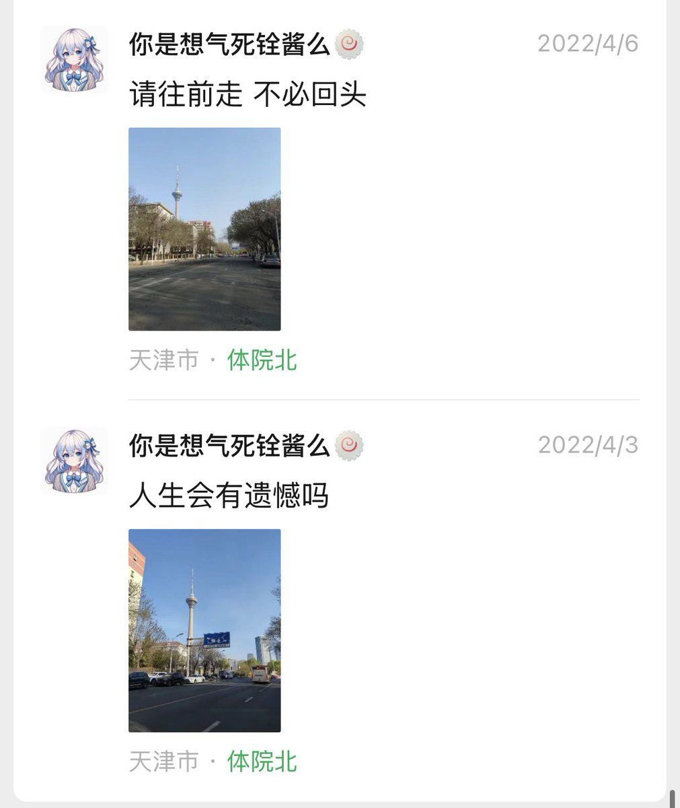

Cassiopeia🍥
@DustSwallo15805
@YongQuan @XUEQIUxka @Xyliaxka 羡慕


铨Quan🍥｜雪秋重度依赖
@YongQuan
万丽天津宾馆
吃上了送的蛋糕也给了个升房
和爱人一起住
想明白了很多东西
体院北
老体育学院北边那一片
被体院北道 紫金山路 卫津路围起来的区域
旁边是上台 再隔壁就是水上公园
可如今望着 没有体北 只有鲁能
人生会有遗憾吗
我不知道 但请往前走 不必回头
谢谢雪秋愿意陪我@XUEQIUxka
我爱你❤️ https://t.co/UjawDmPZvp